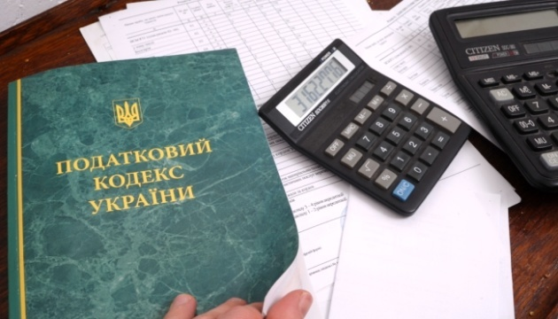
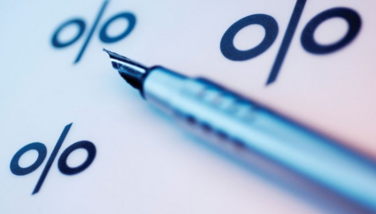
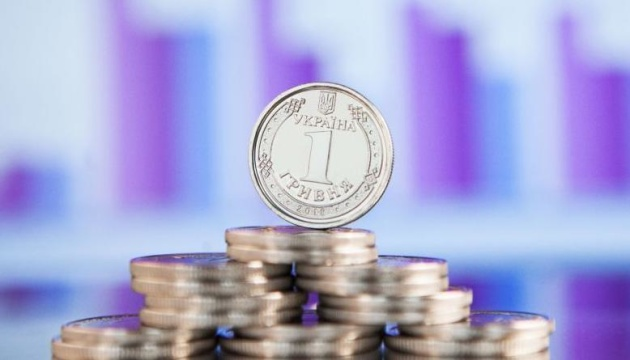

До «Дія.City» приєднуються й іноземні компанії – Президент
До "Дія.City" вже приєднуються не лише українські, а й іноземні компанії.
Про це Президент України Володимир Зеленський сказав під час Diia Summit, повідомляє кореспондент Укрінформу.
"Ми хочемо, щоб резидентами "Дія.City" ставали не лише українські, а й закордонні компанії. І наскільки я знаю, вже сьогодні до "Дія.City" приєднаються і перші, і другі – відомі, передові наші та іноземні компанії", – сказав Зеленський та додав, що Дія.City – це цифрова столиця електронної держави.
Участь у заході беруть Президент України Володимир Зеленський, Прем'єр-міністр України Денис Шмигаль, віцепрем'єр-міністр - міністр цифрової трансформації України.
Джерело: Укрінформ
Податкова реформа-2022: який з варіантів обере влада?
Укрінформ аналізує проєкти податкових змін, які потенційно можуть бути ухвалені вже цього року.
Не встигли влягтися пристрасті після минулорічної епопеї зі змінами до Податкового кодексу, як знову заговорили про нові податкові «рихтування». Минулого тижня у Верховній Раді зареєстрували законопроєкт №6548 “Про внесення змін до Податкового кодексу України та інших законодавчих актів щодо зменшення навантаження на фонд оплати праці”. Невідомо, випадково чи ні, але цими ж днями впливова експертна організація “Український інститут майбутнього” оприлюднила власну концепцію ліберальної податкової реформи, якою передбачене оновлення всього Податкового кодексу. Тим часом в експертних колах і на різних дискусійних майданчиках триває обговорення й інших потенційних змін до податкового законодавства, зокрема, впровадження податку на виведений капітал.
Цілі, які декларують автори більшості ініціатив, нібито співзвучні: послаблення податкового навантаження на бізнес, виведення з “тіні” прибутків підприємців й заробітних плат та інших доходів усіх без винятку наших співвітчизників, стимулювання до роботи в Україні іноземних інвесторів, забезпечення додаткових бюджетних надходжень. І як наслідок – прискорення темпів зростання ВВП й забезпечення інтенсивного розвитку національної економіки.
Та який же із пропонованих шляхів найприйнятніший і може бути найефективнішим?
Варіант №1, майже готовий: об’єднання ЄСВ, ПДФО і військового збору
Другим дискусійним питанням політик назвала заяви великих телевізійних холдингів про ймовірне перевищення повноважень регулятора. "Вони вважають, що буде якийсь терор, цензура. Насправді, якщо розглядати більш детально ці норми, багато з них уже є в законодавстві, але потребують удосконалення", – додала вона.
Кравчук поінформувала, що консультації щодо законопроєкту відбуваються постійно, але не змогла спрогнозувати, коли документ може бути ухвалено. За її словами, цей законопроєкт є одним "із найскладніших для того, щоб проголосувати його навіть за це скликання".
Як повідомлялося, у липні 2020 року в парламенті зареєстрували доопрацьований законопроєкт про медіа. Однак через хвилю критики та відсутність цілковитої підтримки його не виносили на голосування.
Джерело: Укрінформ
Зміна облікової ставки: як подорожчають позики для країни та громадян
Поміж позитивних наслідків підвищення облікової ставки НБУ – сповільнення інфляції, з негативів – подорожчання грошей для економіки
Національний банк оприлюднив звіт за підсумками дискусії членів комітету з монетарної політики, наслідком якої було останнє рішення зі зміни облікової ставки. Саме за рекомендаціями комітету правління НБУ 20 січня підвищило ставку рефінансування з 9 до 10%. Це – перше у нинішньому році збільшення ключового показника, який визначає мінімальну вартість грошей для економіки. Але, вочевидь, не останнє. Адже низка негативних чинників, що провокують розкручування інфляційного маховика (а підвищення облікової ставки є одним з інструментів приборкання інфляції), зберігається.
Тож під час дискусії лунали пропозиції вже зараз підвищити ставку до 11 чи навіть до 12%. Якщо коротко, то вже ухвалені у цій царині і ймовірні майбутні рішення ведуть до подорожчання кредитів для бізнесу (та й населення), а також позик – передовсім, внутрішніх – для України. Що в купі з посиленням загрози масштабної агресії РФ, проблемами із залученням Києвом коштів на міжнародних фінансових ринках дає підстави експертам-песимістам малювати апокаліптичні картини. Аж до повної зупинки економіки й оголошення дефолту. Бо позичати гроші для погашення бюджетного дефіциту та обслуговування попередньої заборгованості, мовляв, ніде. Проте, більшість економістів переконані: завдяки фінансовій підтримці міжнародних партнерів, продовженню співпраці з МВФ, зусиллям, спрямованим на заспокоєння інвесторів-“панікерів” (зокрема, нерезидентів, котрі в січні кинулися масово виводити гроші з українських ОВДП), ми ці неприємності переживемо. Завдання – пережити їх з мінімальними для країни та громадян втратами.
Нагадаємо, облікова ставка – це вартість грошей, за якою комерційні банки можуть отримати рефінансування (взяти кредит) від центробанку тієї чи іншої країни. У нашому випадку – в НБУ. Зрозуміло, що надалі цей показник впливатиме на вартість кредитів, які банки надають своїм позичальникам, вже з урахуванням власного фінансового інтересу. Також від розміру облікової ставки Нацбанку залежить прибутковість (для інвесторів) облігацій внутрішньої державної позики. Опосередковано це впливає й на ціну зовнішніх запозичень для країни. Адже залучені на міжнародних фінансових ринках ресурси не можуть бути набагато дешевшими, ніж внутрішні запозичення – за винятком пільгових кредитних програм від міжнародних фінансових інституцій. Хоча визначальний вплив на вартість грошового ресурсу для країн на світових ринках і на котирування їхніх цінних паперів все ж мають інші чинники. Що й продемонструвала яскраво ситуація кінця минулого – початку нинішнього року, коли через загрозу повномасштабної російської агресії Україна фактично втратила можливості для зовнішніх запозичень.
Джерело: Укрінформ
Валютний курс-2022: чому гривня нервує і потребує «заспокійливого»
Гривня падає виключно через страх потенційної війни. І «нервуватиме» допоки ця загроза зберігатиметься.
Протягом минулого тижня курс долара до гривні, активно підстрибуючи, загалом зріс на 1,3% – з 27,95 до 28,32 грн за долар. І девальваційний тиск на неї триває. Основна причина – ескалація геополітичної ситуації та очікування російського вторгнення. У цій напруженій ситуації іноземні власники українських державних цінних паперів почали їх активно позбуватися від гріха подалі, чим і спровокували попит на іноземну валюту на міжбанківському ринку. Від початку року портфель ОВДП на руках нерезидентів скоротився на 8,3 млрд грн, і темпи його «схуднення» зберігаються. Інших же факторів для нинішнього знецінення гривні, кажуть експерти, немає. Адже експортери та трудові мігранти цілком успішно наповнюють країну доларами, з якої інвестори воліють сьогодні втекти. Що ж чекає нас далі?
В Нацбанку запевнили, що саме нагнітання інформаційного фону навколо потенційної військової агресії й веде до падіння вартості українських активів та посилення девальваційного тиску.
"Нагнітання інформаційного фону навколо потенційної військової агресії позначається на падінні вартості українських активів та посиленні девальваційного тиску. Тривале збереження геополітичного напруження може вкрай негативно вплинути на очікування населення, бізнесу та інвесторів. Також воно буде значною перешкодою для інвестицій в економіку та ускладнюватиме залучення зовнішнього фінансування", – сказав на останньому монетарному брифінгу голова Національного банку Кирило Шевченко. На брифінгу йшлося про рішення регулятора збільшити облікову ставку НБУ до 10%. Голова Нацбанку зазначив, що у разі загострення геополітичних ризиків Нацбанк буде готовий до посилення монетарної політики.
При цьому, у НБУ додають, що вагомим ризиком залишається й подальше розгортання світового інфляційного сплеску, зокрема, і через збереження високих цін на енергоносії та продовольство у світі. В Департаменті ж відкритих ринків Національного банку волатильність курсу пояснюють двома факторами.
"Ситуація на валютному ринку була турбулентною, так як наклалось два фактори: перший – геополітика, другий – це те, що у нас у січні кожного року сезонний сплеск попиту на іноземну валюту, пов'язаний з великими бюджетними витратами в грудні. Тобто в грудні минулого року Мінфін витратив 76 млрд грн, частина цих коштів через певний час пішла на валютний ринок, тому ці два фактори пояснюють підвищення попиту на валюту в січні", – каже глава департаменту Олексій Лупін.
Джерело: Укрінформ
Майже 8 мільйонів українців отримали виплати в межах програми єПідтримка
Майже 8 млн українців отримали виплати в межах програми єПідтримка.
Про це Прем’єр-міністр Денис Шмигаль сказав під час Diia Summit, повідомляє кореспондент Укрінформу.
“Сьогодні майже 8 млн українців отримали кошти в рамках програми єПідтримка, і ми розширюємо і трансформуємо цю послугу, охоплюючи більше сфер. Завдяки цифровізації ми можемо зробити це швидко. Сьогодні вже 9,6 млн українців оформили картки єПідтримки, 8,6 млн заявок на виплати в застосунку Дія і майже 8 млн виплат”, - сказав Шмигаль.
Він нагадав, що Україна також у стислі терміни змогла розробити цифрові COVID-сертифікати, що дало змогу українцям подорожувати країнами Європи та світу. Так всього було сформовано 10,6 млн унікальних COVID-сертифікатів.
Як повідомляв Укрінформ, понад 800 тис. людей отримали одноразову матеріальну допомогу від держави.
Джерело: Укрінформ